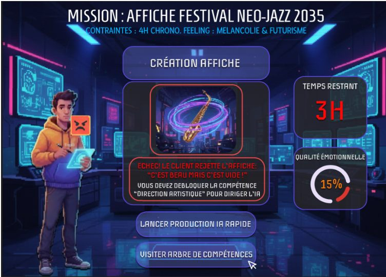
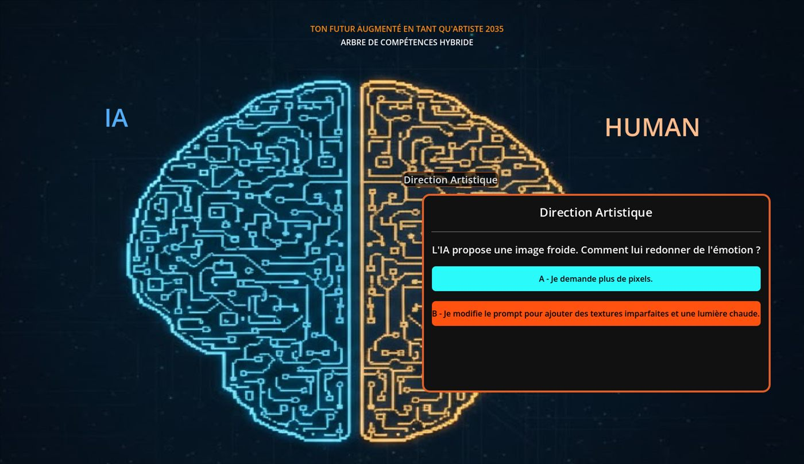
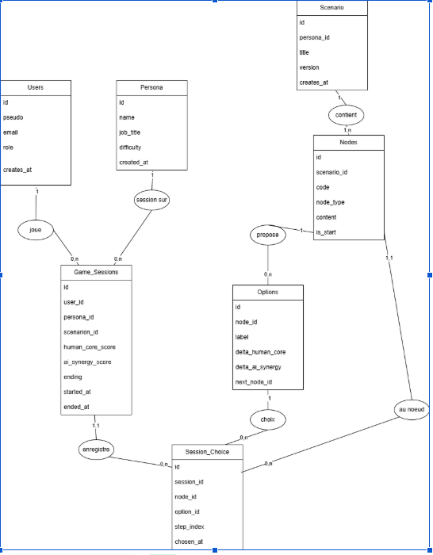

// projet de fin d'études · Master · 2026
Mutation 2035
Un serious game pour sensibiliser à l'intelligence artificielle : le joueur se projette en 2035 dans un métier transformé par l'IA, et doit apprendre à s'en servir sans perdre ce qui fait sa valeur humaine.

Le projet
Réalisé en équipe pour un client, KPMG, dans le cadre d'une startup fictive montée pour le projet de fin d'études. Personne dans l'équipe n'avait encore utilisé de moteur de jeu : nous avons choisi Godot pour nous mettre au défi, et appris GDScript pendant le projet.
Le principe du jeu
- Le joueur choisit un profil, Ingénieur, Artiste ou Consultant, qui détermine son scénario.
- Chaque scénario est une suite de missions sous contrainte. Par exemple, créer en 4 heures l'affiche d'un festival de néo-jazz.
- Produire uniquement avec l'IA ne suffit pas : le client rejette un résultat « beau mais vide ». Il faut débloquer des compétences humaines, comme la direction artistique, pour réussir.
- Chaque choix fait évoluer deux scores, le noyau humain et la synergie avec l'IA, qui déterminent la fin de partie.




Le modèle de données
J'ai conçu la base de données qui porte les scénarios et la progression des joueurs. Un scénario est un graphe : chaque nœud propose des options, et chaque option pointe vers le nœud suivant et modifie les deux scores. Ajouter du contenu revient donc à ajouter des lignes, sans toucher au code du jeu.


Chaque partie est enregistrée (Game_Sessions) avec l'historique de tous les choix du joueur (Session_Choice), pour reprendre une partie et analyser les parcours.
Mon rôle : Tech Lead & back-end
- Choix de l'architecture et coordination technique de l'équipe.
- Conception de la base de données et intégration de Supabase (PostgreSQL) pour la sauvegarde et la progression.
- Scénarios chargés depuis des fichiers JSON, pour que l'équipe puisse écrire du contenu sans toucher au code.
- Pipeline GitHub Actions qui construit le jeu et le publie sur itch.io à chaque version.